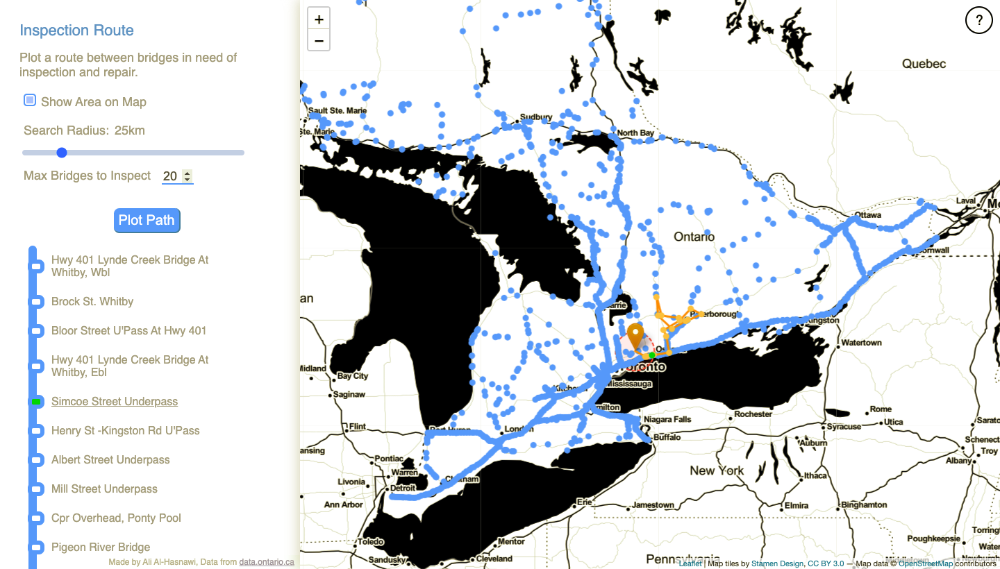

108bridges
A UI for exploring Ontario bridge data.
Interfaces with an API written in
python.
The interactive map was built using
Leaflet.
Can be used to view individual bridge details,
(like construction history and specifications),
as well as plot a route between bridges in the worst
condition. Project was originally developed in a week,
for fun!
API runs on a Heroku free tier dynamo, so expect a 30s wait-time on first load.

API runs on a Heroku free tier dynamo, so expect a 30s wait-time on first load.